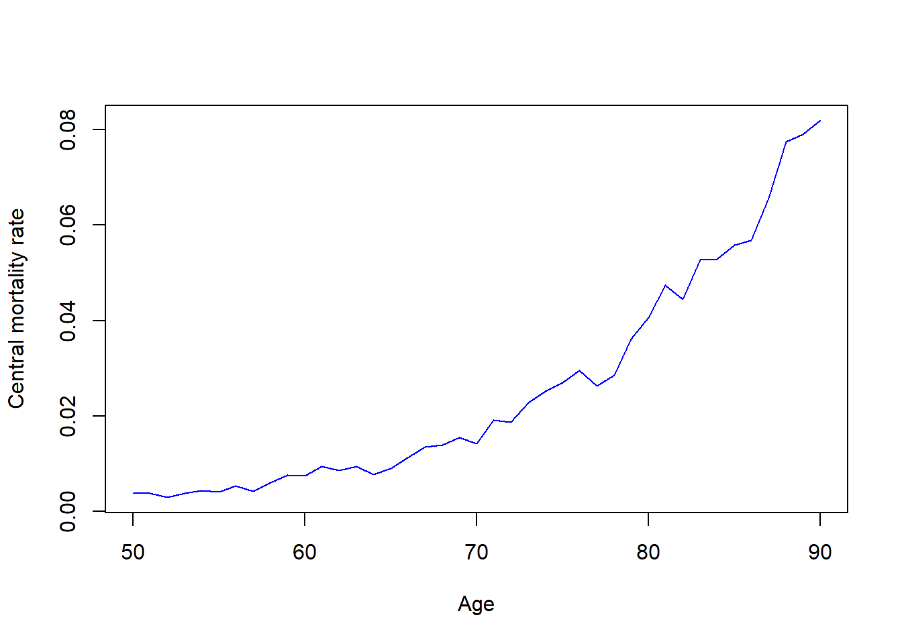
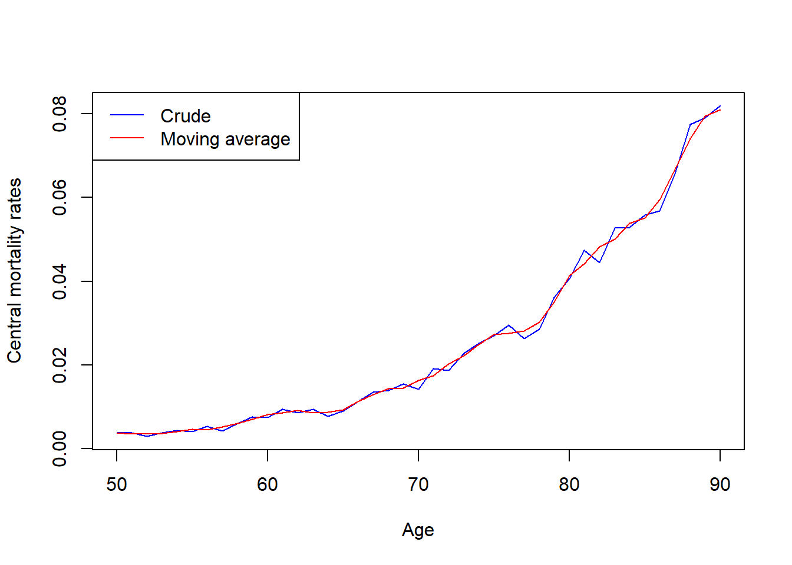
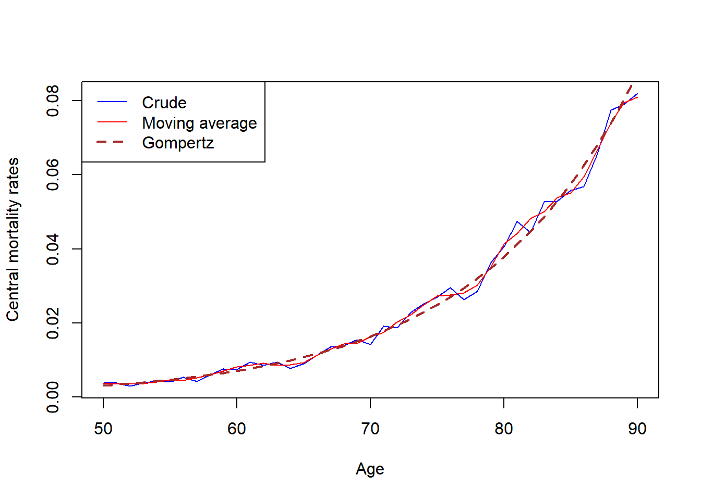
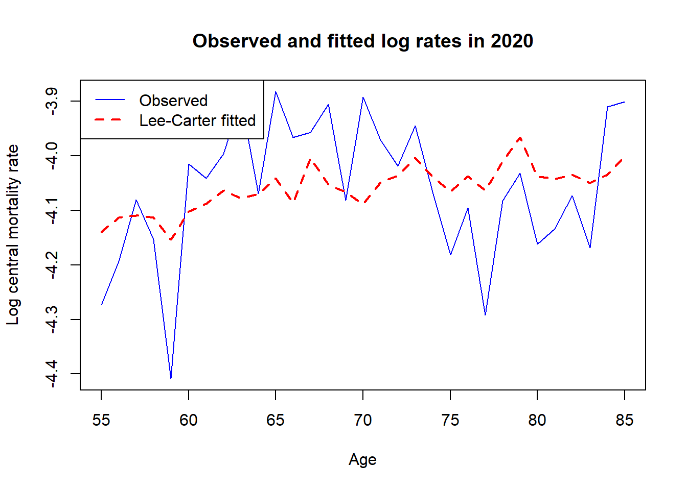

central_exposure: central exposed to risk \(E_x^c\);
deaths: observed deaths \(D_x\).
The column mu_true is included only because the data are synthetic. In real life we would not know it.
NoteTheory reminder: crude central rate of mortality
The crude central rate of mortality is \[
\hat m_x=\frac{D_x}{E_x^c}.
\] It is a random empirical estimate. Under the Poisson model \[
D_x\sim Po(E_x^c\mu_x),
\] we have \[
\mathbb E(D_x)=E_x^c\mu_x,
\qquad
\operatorname{Var}(D_x)=E_x^c\mu_x.
\] Hence \[
\mathbb E(\hat m_x)=\mu_x,
\qquad
\operatorname{Var}(\hat m_x)=\frac{\mu_x}{E_x^c}.
\] So crude rates are less stable when exposure is small.
1.1
Create a new column m_crude in the dataset containing the crude central rate \[
\hat m_x=\frac{D_x}{E_x^c}.
\] Plot it against age.

As you can see, the crude rates become more irregular at high ages, as then the central exposure is smaller, so the variance of the crude central rate is larger. This is one of the main reasons for graduation.
2 Moving-average graduation
NoteTheory reminder: moving average
A moving average is a non-parametric graduation method. It produces a smoother sequence at integer ages. For example, a 3-point moving average is \[
m_x^{(g)}=\frac{\hat m_{x-1}+\hat m_x+\hat m_{x+1}}{3}.
\] This does not create a continuous function of age. It regularises the sequence of crude rates. Note that the choice of the first and last element of the graduated vector is subject to an agreement. We will use the approach when the first and the last elements remain unchanged: e.g. if \(\hat m=(\hat m_1,\hat m_2,\hat m_3, \hat m_4)\) then
It may be useful to know that head and tail functions may have negative arguments: if a is a vector, head(a,-k) gives all entries of \(a\) up to the \(k\)-th element from the end, whereas tail(a,-k) returns last elements ignoring the first \(k\):
a <-c(10,20,30,40,50)head(a,-2)
[1] 10 20 30
tail(a,-2)
[1] 30 40 50
2.1
Graduate the crude central rates using 3-point moving average: create a new column m_ma3 in the dataset. Plot crude and graduated rates together.

3 Parametric graduation: Gompertz model
NoteTheory reminder: Gompertz graduation
The Gompertz model assumes \[
\mu_x^{(g)}=bc^x,
\qquad b>0,\ c>1.
\] Taking logs gives \[
\log \mu_x^{(g)}=\log b+x\log c.
\] Thus a Gompertz model can be fitted by linear regression on the log scale (see also Lab 4 and Lab 6).
3.1
Fit a Gompertz model to the crude central rates using lm function. Add the fitted values to the dataset as mu_gomp. Plot the crude rates, moving average rates, and Gompertz graduated rates.

4 Testing a graduation
We now test the Gompertz graduation.
NoteTheory reminder: standardised residuals and \(\chi^2\)-test
Given a graduated force of mortality \(\mu_x^{(g)}\), the model-based expected number of deaths is \[
E_x^c\mu_x^{(g)}.
\] The standardised residual is \[
Z_x=\frac{D_x-E_x^c\mu_x^{(g)}}{\sqrt{E_x^c\mu_x^{(g)}}}.
\] If the graduation is good, then approximately \[
Z_x\sim N(0,1),
\] and the residuals should behave like random noise.
For \(\chi^2\)-test, the statistics is \[
\chi^2=\sum_x Z_x^2.
\] and the degrees of freedom are \[
k=(\text{number of ages})-(\text{number of fitted parameters}).
\] For Gompertz, the number of fitted parameters is 2.
We have mentioned \(\chi^2\)-test in Lab7, however, it was done internally inside anova function. To deal with this directly, one needs chisq distribution. The functions are the same as for any other probability distribution: pchisq gives probability, qchisq gives quantile, and so on. The functions have an argument df: the number of the degrees of freedom. Another important argument is lower.tail. By default it’s TRUE, however, to get \(p\)-values we need the probability that the statistics is in the critical range, so we need \(\mathbb{P}(X>x)\) if \(X\) is the statistics. Hence, we need lower.tail=FALSE.
4.1
Calculate the \(p\)-value for \(\chi^2\)-test for \(\mu_x^{(g)}\) obtained from the Gompertz graduation.
[1] 0.2769698
Since \(p\)-value is quite large (bigger than any standard significance level: \(0.05\), \(0.1\) etc.), we do not reject the null-hypothesis that the Gompertz model provides an adequate fit.
5 Mortality projection: Lee–Carter model
We first load the projection data from the mort.csv file:
The column mu_true is included only because the data are synthetic. In real life we would not know it.
NoteTheory reminder: Lee–Carter model
The Lee–Carter model is \[
\log \hat m_{x,t}=a_x+b_xk_t+\varepsilon_{x,t}.
\] Here:
\(a_x\) is the average age pattern;
\(k_t\) is the period mortality index;
\(b_x\) is the sensitivity at age \(x\) to changes in \(k_t\).
The usual constraints are
\[
\sum_x b_x=1, \qquad \sum_t k_t=0.
\]
It is given that, in the dataset, the each age has data for the same set of calendar years. The following code create the column of crude central rates \(\hat m_{x,t}=D_{x,t}/E_{x,t}^c\) and reshape the vector of the logariphms of these rates into a matrix with ages as rows and years as columns.
Note how the output is presented (too many columns to fit into the default width).
NoteTheory reminder: estimating \(a_x\)
In the Lee–Carter model \[
\log \hat m_{x,t}=a_x+b_xk_t+\varepsilon_{x,t},
\] we impose \[
\sum_t k_t=0.
\] Therefore, averaging over time gives \[
\hat a_x=\frac{1}{n}\sum_t \log \hat m_{x,t}.
\]
5.1
Calculate vector a_hat of \(\hat a_x\) using a loop (cycle). Then centre the matrix by subtracting \(\hat a_x\) from each row (also in a loop).
Check yourself by calculating the sum of the elements of the resulting matrix (denote it Y):
sum(sum(Y))
[1] -1.731948e-14
The sum should be close to \(0\).
NoteTheory reminder: SVD step
After centring, the Lee–Carter model becomes \[
y_{x,t}\approx b_xk_t.
\]
In matrix form: \[
Y\approx bk^T.
\]
Thus we want the best rank-one approximation to \(Y\). This is obtained using the first singular component: \[
Y\approx d_1u^{(1)}(v^{(1)})^T.
\]
So initially we take \[
b^*=u^{(1)},\qquad k^*=d_1v^{(1)}.
\]
The code below extracts preliminary estimates \(b^*\) and \(k^*\) (notice the usage of svd function and its output).
The Lee–Carter parameters are not unique, because \[
b_xk_t=(cb_x)\left(\frac{k_t}{c}\right).
\]
We impose \[
\sum_x b_x=1,
\qquad
\sum_t k_t=0.
\]
We first centre \(k_t\) by subtracting from each its element the vector’s aveareg, and then we rescale \(b_x\) so that its sum is 1:
# First centre kk_bar <-sum(k_star) /length(k_star)k_centred <- k_star - k_bar# Adjust a to preserve fitted valuesa_adj <- a_hat + b_star * k_bar# Now scale b so that sum(b)=1B <-sum(b_star)b_hat <- b_star / Bk_hat <- B * k_centred# Store namesnames(a_adj) <-rownames(log_rates_matrix)names(b_hat) <-rownames(log_rates_matrix)names(k_hat) <-colnames(log_rates_matrix)# Check constraintssum(b_hat)
[1] 1
sum(k_hat)
[1] 1.820766e-14
NoteTheory reminder: fitted values
The fitted Lee–Carter log-mortality surface is \[
\widehat{\log m}_{x,t}=\hat a_x+\hat b_x\hat k_t.
\]
Construct the fitted matrix of log central rates and compare it with the original observed log crude rates. Use matrix(0, nrow = i, ncol = j) to predefine a matrix with \(i\) rows and \(j\) columns.
5.3
Plot observed and fitted log central rates for one selected year, e.g. \(2020\). Note that, in the above, the rows and columns have not numeric but string indexes, to get an element of a matrix one needs matrix_name["65","2000"] rather than matrix_name[65,2000]. It can be also useful to sue the function as.numeric() to convert its argument from string to numbers: as.numeric("65") would return \(65\).

After fitting the Lee–Carter model, projection is reduced to forecasting the one-dimensional time series \(k_t\) which we will not consider here.